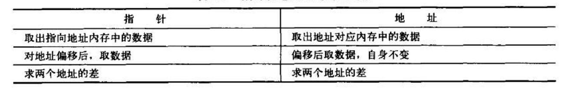
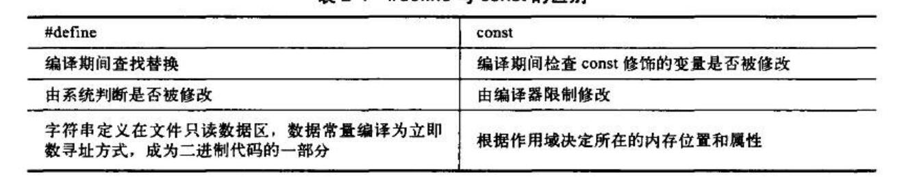
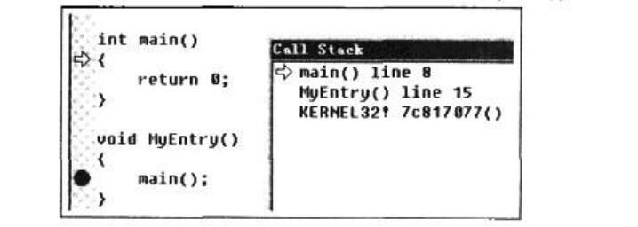

记录一下《C++反汇编与逆向分析技术》
第一章
IDA函数识别
IDA可以识别出函数MessageBoxA及其各参数的信息，IDA通过SIG文件来识别已知的函数信息
常用的SIG文件放置在了IDA安装目录中的SIG文件夹下
SIG文件制作
反汇编引擎的工作原理

Instruction Prefixes:指令前缀
指令前缀是可选的，作为指令的补助说明信息存在，主要用于以下4种情况- 重复指令：如REP、REPE、REPZ
- 跨段指令：如MOV DWORD PTR FS:[XXXX],0
- 将操作数从32位转为16位：如MOV AX，WORD PTR DS:[EAX]
- 将地址从16位转为32位：如MOV EAX，DWORD PTR DS:[BX+SI]
Opcode:指令操作码
Opcode为机器码中的操作符部分，用来说明指令语句执行什么样的操作
汇编指令助记符与Opcode是一一对应的关系。每一条汇编指令助记符都会对应一条汇编指令助记符与Opcode是一一对应的关系。每一条汇编指令助记符都会对应一条Opcode码，但由于操作数类型不同，所占长度也不相同，因此对于非单字节指令来说，解析一条汇编指令单凭Opcode是不够的，还需要Mode R/M、SIB、 Displacement 的帮助，才能够完整地解析出汇编信息Mode R/M：操作数类型
ModeRM是辅助Opcode解释汇编指令助记符后的操作数类型。R表示寄存器，M表示内存单元。Mode RM占一个字节的固定长度
SIB: 辅助Mode R/M，计算地址偏移
SIB的寻址方式为基址+变址，如MOV EAX,DWORD PTR DS:[EBX+ECX*2],其中的ECX、乘数2都是由SIB来指定的。SIB的结构如图1-15所示。SIB占1个字节大小，第0、1、2位用于指定作为基址的寄存器;第3、4、5位用于指定作为变址的寄存器:第6、7位用于指定乘数，由于只有两位，因此可以表示4种状态，这4种状态分别表示乘数为1.2、4、8
Displacement：辅助Mode R/M，计算地址偏移
Displacement用于辅助SIB，如MOV EAX,DWORD PTR DS:[EBX+ECX*2+3]这条指
令，其中的“+3”是由Displacement来指定的Immediate：立即数
用于解释指令语句中操作数为-一个常量值的情况
第二章 C++反汇编揭秘
浮点数的编码方式
float类型在内存中占4字节(32 位)。最高位用于表示符号;在剩余的31位中，从右向左取8位用于表示指数，其余用于表示尾数，如图

在进行二进制转换前，需要对单精度浮点数进行科学记数法转换。例如，将float类型的12.25f转换为IEEE编码，需将12.25f转换成对应的二进制数1100.01,整数部分为1100,小数部分为01 ;小数点向左移动，每移动1次指数加1，移动到除符号位的最高位为1处，停止移动，这里移动3次。对12.25f进行科学记数法转换后二进制部分为1.10001，指数部分为3。在IEEE编码中，由于在二进制情况下，最高位始终为1，为一个恒定值，故将其忽略不计。这里是一个正数，所以符号位添0
所以，转换为:
- 符号位: 0
- 指数位：十进制3+127，转换为二进制是10000010
- 尾数位：10001000000000000000000
这里指数位+127是因为指数可能出现负数，127的二进制表示为01111111，规定当指数域小于01111111时为一个负数，反之为正数，因此01111111为0
12.25f转换后的IEEE编码按二进制拼接为010000010100010000000000000000。转换
成十六进制数为0x41440000,内存中以小尾方式进行排列，故为00 00 44 41
浮点数-0.125f转换IEEE编码后，将会是一一个符号位为1,指数部分为负的小数。-0. 125f经转换后二进制部分为0.001,用科学记数法表示为1.0，指数为-3
所以转换结果为:
- 符号位: 1
- 指数位：十进制(-3)+127，转换为二进制是01111100
- 尾数位：00000000000000000000000
上面的两个浮点数小数部分转换为二进制时都是有穷的，如果小数部分转换为二进制时得到一个无穷值，则会根据尾数部分的长度舍弃多余的部分。单精度浮点数1.3f,小数部分转换为二进制就会产生无穷值，依次转换为: 0.3、0.6、 1.2、 0.4、 0.8、1.6、1.2、0.4、0.8…转换后得到的二进制数为1.01001100110011001100110,到第23位终止，尾数部分无法保存更大的值
转换结果为：
- 符号位: 0
- 指数位：十进制(0)+127，转换为二进制是01111111
- 尾数位：01001100110011001100110
基本的浮点数指令
浮点寄存器是通过栈结构来实现的，由ST(0)~ ST(7)共8个栈空间组成，每个浮点寄存器占8字节。每次使用浮点寄存器都是率先使用ST(0)，而不能越过ST(0)直接使用ST(1)。浮点寄存器的使用就是压栈、出栈的过程。当ST(0)存在数据时，执行压栈操作后，ST(0) 中的数据将装入ST(1)中，如无出栈操作，将顺序地向下压栈，直到将浮点寄存器占满。常用浮点数指令的介绍如表2-1所示，其中，IN表示操作数人栈，OUT 表示操作数出栈

类型转换函数_ftol的实现
;保存环境，预留语句变量空间
0040E688 push ebp
0040E689 mov ebp,esp
0040E68B add esp,0f4h
;浮点异常检查、CPU与FPU的同步工作
0040E68E wait
0040E68E fnstcw word ptr [ebp-2]
0040E692 wait
0040E693 mov ax,word ptr [ebp-2]
0040E697 or ah, 0Ch
0040E69A mov word ptr [ebp-4] ,ax
0040E69E fldcw word ptr [ebp-4]
;从ST(0)中取出8字节数据转换成整型并存入ebp-0Ch中
;将ST(0)从栈中弹出
0040E6A1 fistp qword ptr [ebp-0Ch]
0040E6A4 fldcw word ptr [ebp-2]
;使用eax保存整型数据的低4字节，用于返回
0040E6A7 mov dword ptr [ebp-0ch]
;使用edx保存整型数据的高4字节，用于返回
0040E6AA mov edx,dword ptr [ebp-8]
;释放栈
0040E6AD leave
0040E6AE ret字符和字符串
ASCII使用GB2312-80，又叫汉字国标码，保存了6763个常用汉字编码，用两个字节来表示一个汉字。在GB2312-80中用区和位来定位，第一个字节保存每个区，共94个区;第二个字节保存每个区中的位，共94位。详细信息可查看GB2312-80编码的说明
Unicode使用UCS-2编码格式，最多可存储65536个字符。汉字博大精深，其中有简体字、繁体字，以及网络中流行的火星文，它们的总和远远超过了UCS-2的存储范围，所以UCS-2编码格式中只保存了常用字。为了将所有的汉字都容纳进来，Unicode也采用了与ASCII类似的方式一用 两个Unicode编码解释一个汉字，称之为UCS-4编码格式。UCS-2编码表的使用和ASCII码表的使用是一样的。每个数字编号在表中对应-一个汉字，从0x4E00到0x9520为汉字编码区。例如，在UCS-2中，“烫”字的编码为0x70EB
C++使用结束符\O’作为字符串结束标志。ASCII编码使用一个字节“0’,Unicode编码使用两个字节\0’。需要注意的是，不能使用处理ASCII编码的函数对Unicode编码进行处理，因为如果Unicode编码中出现了只占用1字节的字符，就会发生解释错误
地址、指针和引用
指针和地址的区别
在32位操作系统下，地址是一个由32位二进制数字组成的值。为了便于查看，转换成十六进制数字进行显示，用于标识内存编号。指针是用于保存这个编号的-种变量类型，它包含在内存中，所以可以取出指针类型变量在内存中的位置一地址。 由于指针保存的数据都是地址，所以无论什么类型的指针都占据4字节的内存空间，如图

指针可以根据指针类型对地址对应的数据进行解释。而一个地址值无法单独解释数据,对于图中0x0012FF68这个地址值，仅仅凭借它自己无法说明该地址处对应数据的信息。如果是在一个int 类型的指针中保存这个地址，就可以将0x0012FF68这个地址值看做是int类型数据的起始地址，向后数4字节到0x0014FF6C处。将0x0012FF68 ~0x0014FF6C中的数据按整型存储方式解释



各类指针的工作方式
不同指针的源码：
// C++源码对比，定义int类型变量，初始化为0x12345678
int nVar = 0x12345678;
;为地址赋值4字节数据12345678h
0040EB1D mov dword ptr [ebp-10h],12345678h
// C++源码对比，定义int类型指针变量，初始化为变量nVar地址
int *pnVar = &nVar;
0040EB24 lea ecx,[ebp-10h]
0040EB27 mov dword ptr [ebp-14h],ecx
// C++ 源码对比，定义char类型指针变量， 初始化为变量nvar地址
char *pcVar = (char*) &nVar;
0040EB2A lea edx,[ebp-10h]
0040EB2D mov dword ptr [ebp-1ch],eax
// C++源码对比，定义short类型的指针变量，初始化为变量nVar地址
short *psnVar = { short*) &nVar ;
0040EB30 lea eax,[ebp-10h]
0040EB33 mov dword ptr [ebp-1Ch],eax
//C++源码对比，取出指针pnVar指向的地址内容并显示
printf("%08x \r\n"，*pnVar) ;
;取出pnVar中保存的地址值并放入ecx中
0040EB36 mov ecx,dword ptr [ebp-14h]
;从ecx保存的地址中，以4字节方式读取数据，存入edx中
0040EB39 mov edx,dword ptr [ecx]
pcVar 以1字节的方式读取数据存入ecx中
psnVar 以2字节的方式读取存入eax中指针类型只支持加法和减法，指针进行运算后，指针内保存的地址值的增加或减少取决于指针类型，如int类会使地址值的变换是4
type *P;//这里用type泛指某类型的指针s
p+n的目标地址=首地址+ sizeof( 指针类型type) * n
两指针相减可以得到数组长度
引用
C++将指针操作进行了封装，产生了引用类型
引用通过编译器寻址，而指针需要手动寻址
void Add (int &nVar) {
;在Debug版中添加汇编代码略
nVar++; // C++源码对比，对引用类型nVar执行++操作
;取出参数nVar中的内容放入eax中
00401078 mov eax,dword ptr [ebp+8]
;对eax执行取内容操作
0040107B mov ecx,dword ptr [eax]
0040107D add ecx,1
00401080 mov edx,dword ptr [ebp+8]
00401083 mov dword ptr [edx],ecx
}
常量
#define和const的区别
#define是一个真常量，而const是由编译器判断的假常量，实际上，const定义的变量，终究还是一个变量，只是在编译器内进行了检查，发现有修改则报错
所以可以修改const常量，通过指针获取const常量的地址，强制将指针的const修饰去掉，就可以修改对应的数据内容
// C++源码对比，将变量nConst修饰为const
const int nConst = 5;
;将地址ebp-4赋值给4字节数据5
004010B8 mov dword ptr [ebp-4],5
// C++源码对比，定义int类型的指针，保存nConst地址
int *pConst = (int*) &nConst ;
;获取ebp-4地址并存入eax中
004010BF lea eax,[ebp-4]
;将eax中的数据赋值到地址ebp-8处
004010C2 mov dword ptr [ebp-8],eax
// C++源码对比，修改指针pConst并指向地址中的数据
*pConst = 6;
;荻取地址ebp-8中的数据并存入ecx
004010C5 mov ecx,dword ptr [ebp-8]
;将地址ebp-8中保存的数据修改为6
004010C8 mov dword ptr [ecx],6
// C++源码对比，将修饰为const的变量nConst腻值给nVar
int nVar = nConst ;
;将5赋值到地址ebp-0Ch处
00401OCE mov dword ptr [ebp-0ch],5
最后的直接赋值5是编译器做出了优化

第三章 认识启动函数，找到用户入口
程序真正入口
main或WinMain函数应该是“语法规定的用户入口”，而不是“应用程序入口”。在应用程序被操作系统加载时，操作系统会分析执行文件内的数据，分配相关资源，读取执行文件中的代码和数据到合适的内存单元，然后才是执行入口代码，入口代码其实并不是main或WinMain，通常是mainCRTStartup、wmainCRTStartup、 WinMainCRTStartup 或wWinMainCRTStartup，具体视编译选项而定。其中mainCRTStartup和wmainCRTStartup是控制台环境下多字节编码和Unicode编码的启动函数，而WinMainCRTStartup和wWinMainCRTStartup则是Windows环境下多字节编码和Unicode编码的启动函数。在开发过程中，VC++也允许程序员自己指定入口
VC++6.0的启动函数
VC++6.0在控制台和多字节编码环境下的启动函数为mainCRTStartup，由系统库KERNEL32.dll负责调用。在mainCRTStartup中再调用main函数。使用VC++ 6.0进行调试时，入口断点总是停留在main函数的首地址处
void mainCRTStartup (
#endif /* WPRFLAG */
#endif /* _WINMAIN_ */
void
)
{
//荻取版本信息
_osver = GetVersion();
_winminor = (_osver >> 8) & 0x00FF;
_winmajor = _ osver & 0x00FF;
_winver = (_ winmajor << 8) + _winminor;
_osver = (_osver >> 16) & 0x00FFFF;
// 堆空间初始化过程，在此函数中，指定了程序中堆空间的起始地址
// _MT是多线程标记
#ifdef _MT
if ( ! _heap_ init(1) )
#else /* _MT */
if ( !_ heap_ init(0) )
#endif /* _MT */
fast_error_ exit(_RT_HEAPINIT);
//初始化多线程环境
#ifdef _MT
if( !_ mtinit() )
fast_error_exit(_RT_THREAD);
#endif /* _MT */
_try {
// 宽字符处理代码略
// 多字节版荻取命令行
_acmdln = (char *) GetCommandLineA();
// 多字节版获环境变量信息
_aenvptr = {char *)__crtGetEnvironmentStringsA();
// 多字节版获取命令行信息
_setargv();
// 多字节版荻取环境变量信息
_setenvp();
#endif /* WPRFLAG */
// 初始化全局数据和浮点寄存器
_cinit();
// 窗口程序处理代码略
// 宽字符处理代码略
// 获取环境变量信息
_initenv = _environ;
// 调用main函数，传递命令行参数信息
mainret = main(_argc, _argv, _environ);
#endif /* WPRFLAG */
#endif /* _WINMAIN_ */
// 检查main函数返回值执行析构函数或atexit注册的函数指针，并结束程序
exit (mainret);
}
// 退出结束代码略
- GetVersion函数:获取当前运行平台的版本号。控制台程序运行在Windows模拟的DOS下，因此这里获取的版本号为MS-DOS的版本信息
- _ heap_ init函数:用于初始化堆空间。在函数实现中使用HeapCreate申请堆空间，申请空间的大小由_heap_init传递的参数决定。_sbh_heap_init函数用于初始化堆结构信息
- GetCommandLineA函数:获取命令行参数信息的首地址
- _crtGetEnvironmentStringsA函数:获取环境变量信息的首地址
- _setargv函数:此函数根据GetCommandLineA获取命令行参数信息的首地址并进行参数分析，将分离出的参数的个数保存在全局变量_arge中，将分析出的每个命令行参数的首地址存放在数组中，并将这个字符指针数组的首地址保存在全局变量_argv中。这样就得到了命令行参数的个数，以及命令行参数信息
- _ setenvp 函数:此函数根据__crtGetEnvironmentStringsA 函数获取环境变量信息的首地址并进行分析，将得到的每条环境变量字符串的首地址存放在字符指针数组中，并将这个数组的首地址存放在全局变量env中
得到main函数所需的三个参数信息之后，当调用main函数时，便可以将_ _argc、 _argv、 env这三个全局变量作为参数，以栈传参方式传递到main函数中
- _cinit函数:用于全局数据和浮点寄存器的初始化。全局对象和I/O流等的初始化都是通过这个函数实现的。利用函数 itterm 进行数据链初始化，这个函数由两个参数组成，类型为“_PVFV*”,这是一个函数指针数组，其中保留了每个初始化函数的地址。初始化函数的类型为_PVFV, 其定义原型如下:
typedef void ( cdec1 * _PVFV) (void);
也就是说，这个初始化函数是无参数也无返回值的，C++ 规定全局对象和静态对象必须在main函数前构造，在main函数返回后析构。所以，这里的_PVFV函数指针数组就是用来代理调用构造函数的，具体如下所示：
// 用于初始化寄存器
if (_FPinit != NULL)
(*_ FPinit) (); //初始化浮点寄存器
// 用于初始化C语法中的数据
_initterm( _xi_a, _xi_z );
// 用于初始化C++语法中的数据
_initterm( _XC_a, _XC_z );
FPinit 是一个全局函数指针，类型也是_PVFV, 如果编译器扫描代码时发现有浮点计算，则此指针保存了初始化浮点寄存器的代码地址，否则为0值。如果浮点寄存器未被初始化而进行浮点计算，程序会产生异常或错误，这类错误应属于VC++ 6.0自身设计的Bug,在VC++6.0以后的版本中已将其修复。一般而言，第一个_initterm 初始化的都是C支持库中所需的数据。参数_xi_a 为函数指针数组的起始地址，_xi_z为结束地址。 _initterm 的实现：
static void__ cdec1 initterm (
_PVFV * pfbegin,
_PVFV * pfend
)
{
// 遍历数组的各元素
while ( pfbegin < pfend )
{
// 若函数指针不为空，则执行该函数
if ( *pfbegin != NULL )
(**pfbegin) () ;
++pfbegin;
}
}在默认情况下，入口函数为main,这时会从mainCRTStartup启动，再传入main所需要的三个参数，最后调用main函数。重新指定入口函数后，将直接从KERNEL32中调用重新指定的入口函数，而不会经过mainCRTStartup。通过修改编译选项，重新设置人口函数，依次选择菜单Procject→Settings →Link→Output,在Enty-pointsymbol中填写需要重新指定新入口的函数名称。编译后调试程序，结果如图所示

由于没有调用mainCRTStartup函数，所以堆空间没有被初始化，当使用堆空间时，程序会报错崩溃
识别main函数
main函数有如下特征是:它有3个参数，分别为命令行参数个数、命令行参数信息和环境变量信息，而且它是启动函数中唯一的具有3个参数的函数。同理，WinMain 也是启动函数中唯一的具有4个参数的函数
;省略部分代码
; O1lyDBG识别出的函数名称为GetCommandLineA
00401210 |. FF15 38514200 call dword ptr ds: [< &KERNEL32.GetCommand>
;得到命令行参数
00401216 |. A3 444F4200 mov dword ptr ds: [424F44] , eax
;根据main函数特性，此处为函数_crtGetEnvironmentStringsA() 调用
0040121B |. E8 E0240000 call ProgramE.00403700
00401220 |. A3 BC354200 mov dword ptr ds: [4235BC] , eax
;根据main函数特性，此处为函数_setargv()调用
00401225 |. E8 C61F0000 call ProgramE.004031F0
;根据main函数特性，此处为函数cinit()调用
0040122F |. E8 8C1A0000 call ProgramE.00402CC0
00401234 |. 8B0D 00364200 mov ecx, dword ptr ds: [423600]
0040123A |. 890D 04364200 mov dword ptr ds: [423604] , ecx
00401240 |. 8B15 00364200 mov edx, dword ptr ds: [423600]
;压栈传参，环境变量信息
00401246 |. 52 push edx
00401247 |. Al F8354200 mov eax, dword ptr ds: [4235F8]
;压栈传参，命令行参数信息
0040124C |. 50 push eax
0040124D |. 8BOD F4354200 mov ecx, dword ptr ds; [4235F4]
;压栈传参，命令行参数个数
00401253 |. 51 push ecx
;此处为main函数的调用处，跟进到函数中便是main函数的实现代码流程
00401254 |. E8 ACFDFFFF call ProgramE.00401005